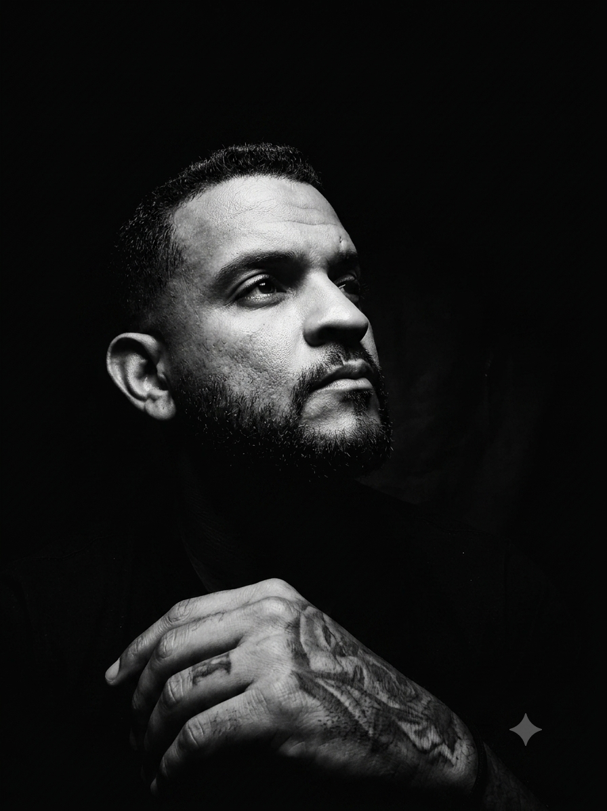
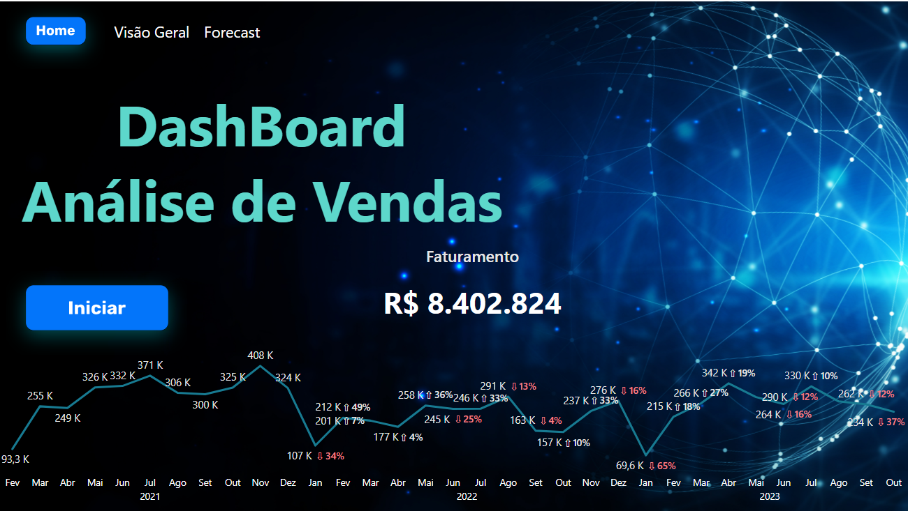
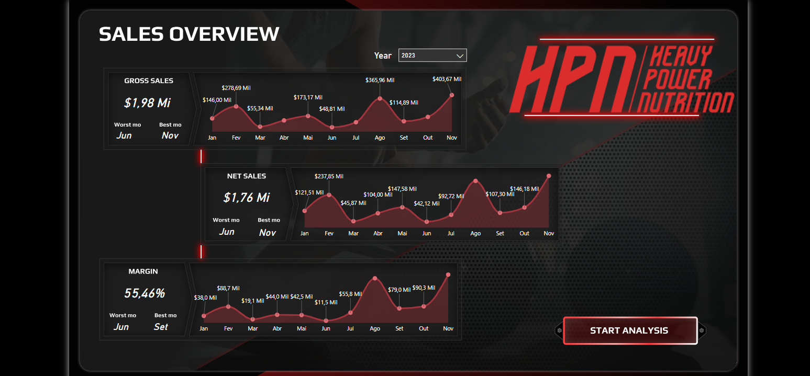
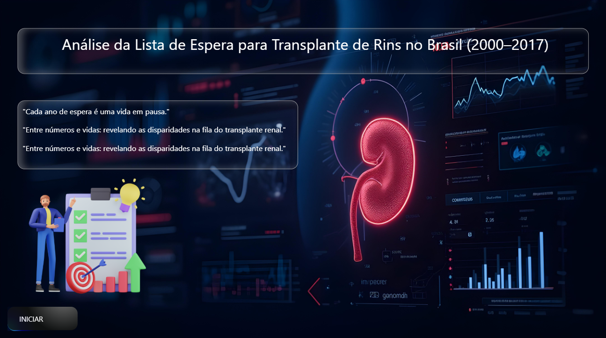
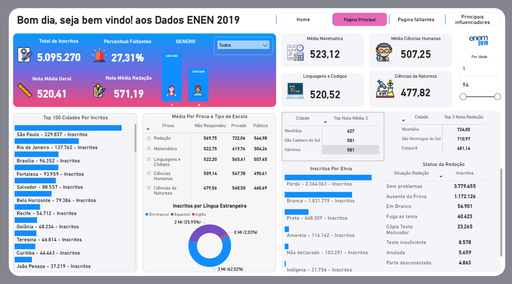
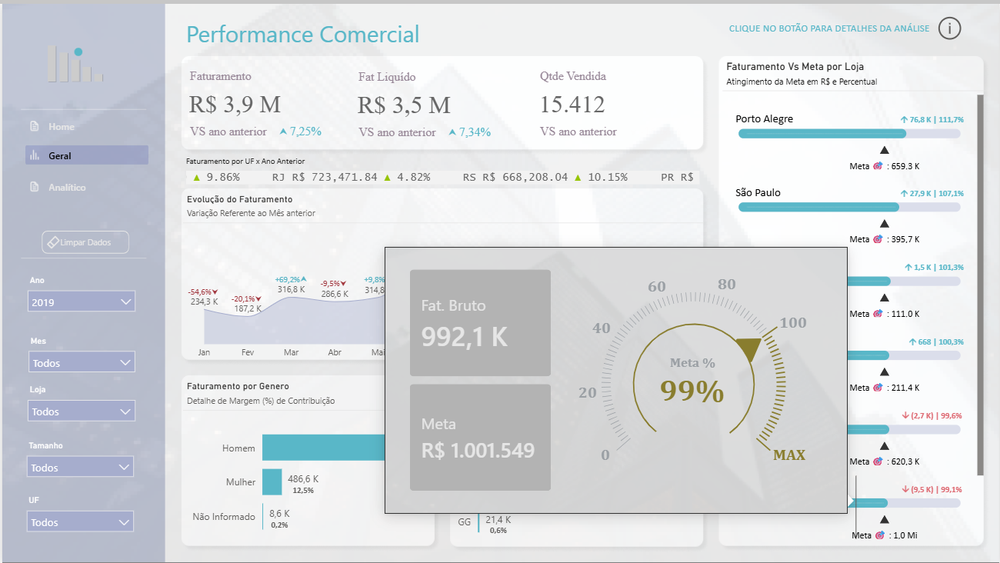
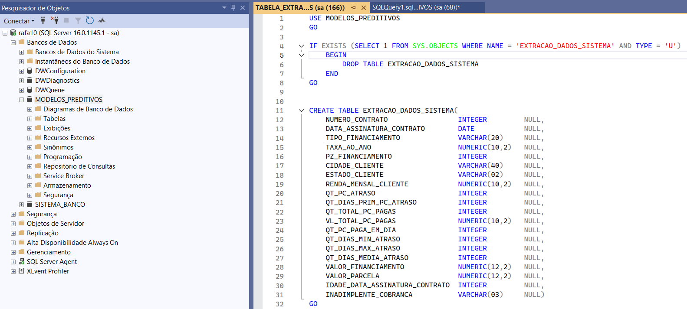

.png)
Sobre Mim
Da gestão operacional à engenharia de dashboards estratégicos.

Com sólida trajetória de mais de 20 anos em Operações e Logística Empresarial (MBA e Graduação), atuo conectando a inteligência de negócios à tomada de decisão executiva através de dados.
Minha expertise une a vivência prática em processos complexos e liderança de equipes ao desenvolvimento avançado de soluções em Power BI (DAX, Power Query e Data Modeling), estruturação de consultas em SQL Server e automação estratégica com Python e Excel/VBA.
Foco na entrega contínua de eficiência e inteligência analítica, transformando grandes volumes de dados operacionais e financeiros em dashboards interativos, indicadores de performance (KPIs) e automações que reduzem custos e otimizam resultados.
União entre 20 anos de chão de fábrica/operações e inteligência de negócios orientada a dados.
Eliminação de tarefas manuais repetitivas através de scripts Python e modelagem DAX/SQL.
Mais de uma década gerindo equipes operacionais com foco em clima e metas claras.
Mapeamento de gargalos em estoques, frotas e compras para redução direta de custos.
Habilidades & Competências
Conjunto de ferramentas técnicas, análise quantitativa e gestão operacional.
Engenharia de BI & Analytics
Modelagem, métricas e dashboards analíticos de alta performance para tomada de decisão.
Cadeia de Suprimentos & WMS
Expertise de 20 anos em gestão de processos, estoques e otimização logística.
Coordenação & Melhoria Contínua
Coordenação de equipes de alta performance, clima organizacional e cultura orientada a metas.
Projetos & Dashboards
Relatórios analíticos interativos, modelos de dados e automações desenvolvidas na prática.
Performance de Vendas
Análise aprofundada de desempenho comercial, comparativos anuais (YoY), evolução de faturamento e distribuição de receitas.

Infográfico de Vendas
Dashboard interativo com design em formato de infográfico, acompanhando metas, ticket médio, margens e performance por canal.

HPN Heavy Power Nutrition
Dashboard executivo voltado ao setor nutricional e esportivo, monitorando giro de estoque, rentabilidade de produtos e canais de venda.

Transplante de Rins no Brasil
Análise longitudinal da fila de espera e procedimentos de transplante renal ao longo de 17 anos com dados abertos de saúde pública.

Análise Educacional ENEM 2019
Tratamento e análise de grandes volumes de microdados do ENEM, cruzando fatores socioeconômicos e notas de desempenho por disciplina.

Análise Comercial de Vendas
Painel gerencial de dados de vendas, faturamento por região, ticket médio e monitoramento de metas comerciais em tempo real.

Engajamento Instagram
Análise estatística e correlação de métricas de redes sociais, identificando horários de pico e fatores determinantes de engajamento.
Análise Lojas Seu João (Varejo)
Análise exploratória de dados (EDA) para rede varejista (Desafio Alura Store), mapeando faturamento, sazonalidade e perfil de compras.

x-Telecom: Previsão de Churn
Análise de evasão de clientes em telecomunicações, diagnosticando motivos de cancelamento e aplicando modelos preditivos de retenção.
Análise de Dados com Python
Repositório central com scripts de automação, manipulação de bases relacionais, pipelines de ETL e geração de gráficos estatísticos.

Previsão de Inadimplência
Modelo preditivo de crédito integrando consultas avançadas em SQL e algoritmos de machine learning em Python para antecipação de inadimplência.
Experiência Profissional
20 anos de experiência prática, unindo liderança de operações e inteligência analítica.
Analista de Prevenção e Demanda
Atuação estratégica com inteligência de dados, prevenção de perdas e automação de rotinas de supply chain:
- • Desenvolvimento de dashboards dinâmicos em Power BI para monitoramento de KPIs e performance de fornecedores;
- • Automação de rotinas de cotação e tratamento de bases de dados utilizando scripts em Python;
- • Gestão do ciclo de compras com foco em insumos críticos e mitigação de rupturas;
- • Análise de dados operacionais para identificação contínua de oportunidades de redução de custos.
Encarregado de Logística
Liderança de operações logísticas, gestão de armazenagem, acuracidade de inventário e distribuição:
- • Análise de dados dos processos logísticos com geração de relatórios gerenciais e dashboards de produtividade;
- • Otimização da liberação de veículos e roteirização através de análise diária de volumetria e rotas;
- • Padronização e melhoria contínua no processo de inventários cíclicos e gerais;
- • Gestão direta de pessoas, controle de jornada e clima organizacional de equipe operacional.
Encarregado Geral de Operações
Gestão completa da operação do centro de distribuição, processos de armazenagem, WMS e fiscal:
- • Liderança de equipe operacional por quase uma década garantindo SLAs de entrega e acuracidade;
- • Implementação e consolidação de rotinas com sistema WMS para recebimento, endereçamento e expedição;
- • Elaboração de relatórios analíticos de estoque para a diretoria comercial e financeira;
- • Treinamento, capacitação técnica e desenvolvimento contínuo de colaboradores.
Formação & Certificações
Educação formal continuada com foco em tecnologia da informação e especialização analítica.
Análise e Desenvolvimento de Sistemas
Python Impressionador
Formação em Análise de Dados
MBA em Logística Empresarial
Gestão da Cadeia de Suprimentos
Entre em Contato
Aberto para novas oportunidades em Análise de Dados, BI, consultorias e networking profissional.
Envie uma Mensagem Rápida
Preencha os campos abaixo para iniciar uma conversa diretamente pelo WhatsApp.